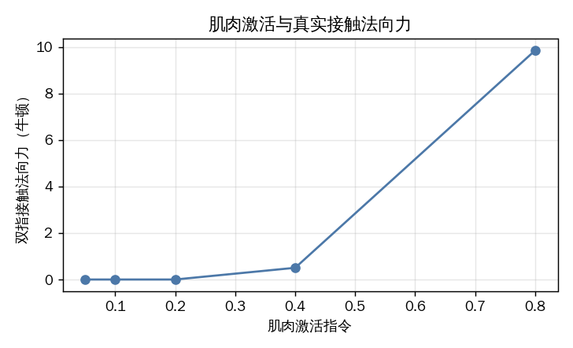
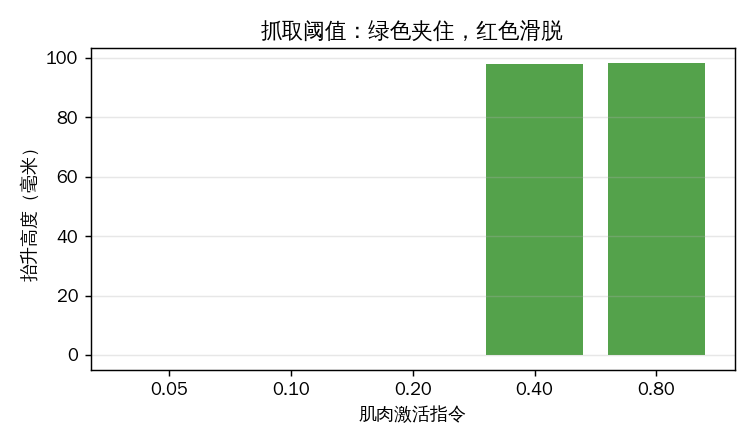
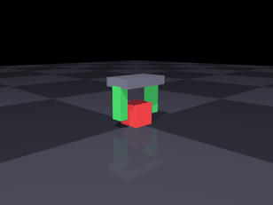
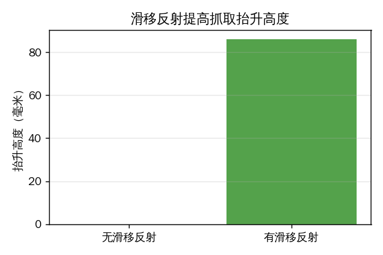
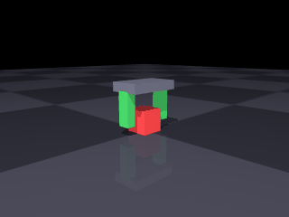
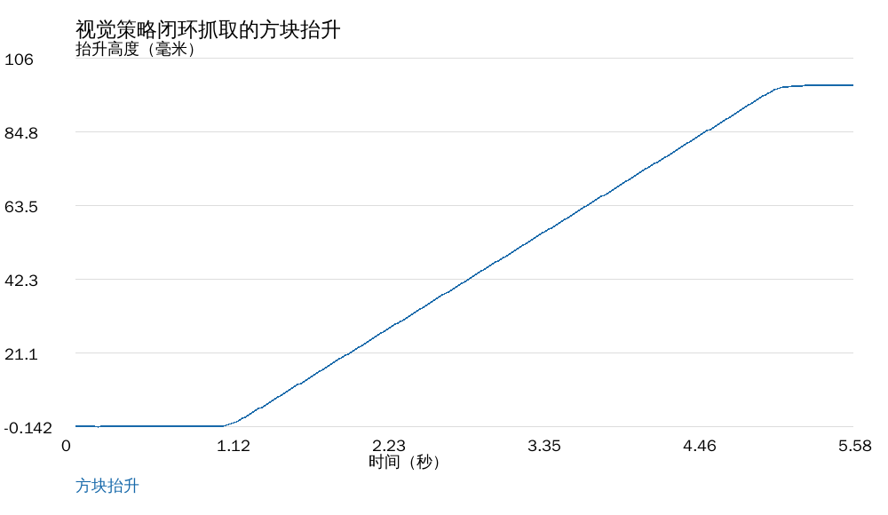
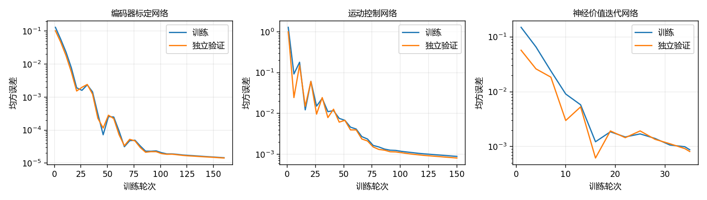
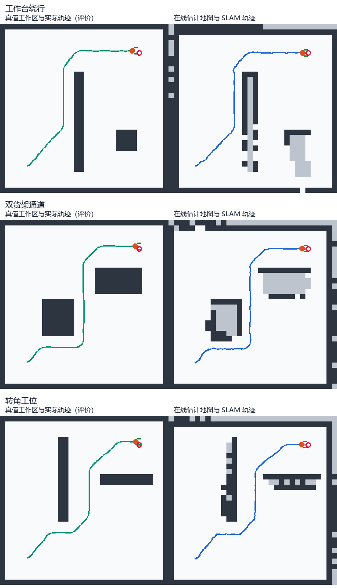
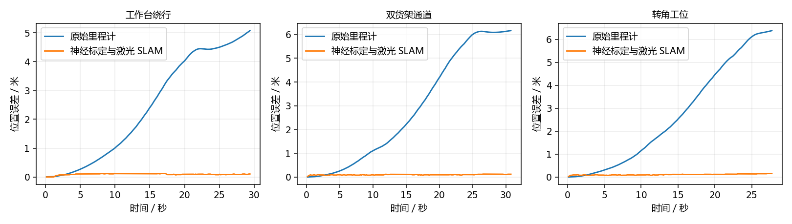
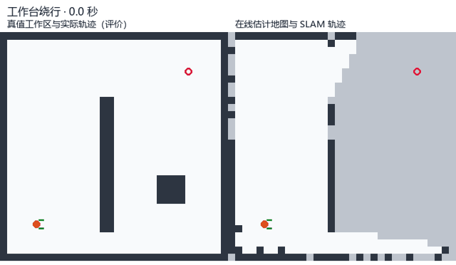

肌肉驱动夹爪：真实接触抓取
两指夹爪由 Hill 肌肉驱动合拢，与方块之间是真实接触摩擦。抬升时方块完全靠摩擦力跟手， 代码里没有任何位置约束或焊接约束——夹不住就是夹不住。
与仓库已有模块的关系：
| 已有模块 | 本模块的差异 |
|---|---|
| 肌肉驱动的关节控制 | 那个是关节角跟踪；本模块关心接触力与摩擦 |
| 肌肉驱动的下肢关节与步态 | 那个不接触物体；本模块的核心就是接触 |
| 肌肉骨骼灵巧手 | 那个是遥操作手部姿态；本模块做抓取成功条件的定量分析 |
1 模型
1.1 机构
固定手掌 + 两根平行手指（滑块关节）+ 桌面上的方块：
| 部件 | 参数 |
|---|---|
| 手指行程 | 0 – 30 mm |
| 手指质量 | 20 g |
| 回位弹簧刚度 | 800 N/m |
| 方块 | 30 mm 立方，30 g |
| 仿真步长 | 0.5 ms |
1.2 肌肉
每根手指一条 Hill 肌肉，长度随手指合拢而缩短：
肌力经 qfrc_applied 施加到手指滑块；回位弹簧负责张开。
2 八组实验
下表数值按 Ubuntu 22.04 / ROS 2 Humble 容器中的 MuJoCo 3.3.7 实测统一更新，完整记录见基准指标。原有 G2/G8 动图保留，用于观察相同场景的运动过程；新增神经网络图像与数据见第 11 节。
2.1 G1 肌肉激活 → 夹持力
| 激活 | 肌力 | 弹簧回位力 | 接触法向力（双指合计） | 接触点数 |
|---|---|---|---|---|
| 0.05 | 1.17 N | 1.17 N | 0.00 N | 0 |
| 0.10 | 2.29 N | 2.29 N | 0.00 N | 0 |
| 0.20 | 4.32 N | 4.32 N | 0.00 N | 0 |
| 0.40 | 7.67 N | 7.42 N | 0.50 N | 8 |
| 0.80 | 14.13 N | 9.20 N | 9.86 N | 8 |
夹持力取手指与方块之间的真实接触法向力（mj_contactForce），而不是肌力：
肌力要先扣掉 800 N/m 的回位弹簧力才作用到方块上。前三档手指行程只有 1.5–5.4 mm，
还没碰到方块（接触点数 0），因此接触力为 0——不是"夹了 4.3 N 但滑了"，而是根本没夹上。

2.2 G2 抬升阈值
抬升目标 100 mm：
| 激活 | 抬升高度 | 结果 |
|---|---|---|
| 0.05 / 0.10 / 0.20 | ~0 mm | 打滑 |
| 0.40 | 97.8 mm | 夹住 |
| 0.80 | 98.2 mm | 夹住 |
阈值在 0.2 与 0.4 之间：0.2 时手指行程 5.4 mm，还没碰到方块（接触点数 0）；0.4 时每指真实法向力约 0.25 N 即可夹住。这是真实的"夹得住 / 夹不住"分界： 低于阈值时方块保持在桌面附近，高于阈值时方块跟着手走约 98 mm。

抓住时的画面：

激活 0.15（低于阈值）时的打滑：

2.3 G3 摩擦系数的影响
| 摩擦 μ | 激活 0.4 时抬升 |
|---|---|
| 0.3 | 3.7 mm（抬起后滑脱） |
| 0.8 | 97.8 mm |
| 1.5 | 97.8 mm |
摩擦不足时，力够了也夹不住——限制来自接触面，不是肌肉。这条结论对真实夹爪设计有直接意义： 表面摩擦系数决定了下限，超过之后再加肌肉力没有收益。

2.4 G4 对照组：松开就掉
夹住抬到 95 mm 后把激活降到 0：
| 指标 | 数值 |
|---|---|
| 抬升高度 | 95.3 mm |
| 松开后掉落时间 | 0.16 s |
这一组用来验证前面的"抓住"确实是摩擦维持的——松开肌肉，方块立刻掉。
2.5 G5 抓持力闭环
PI 调节激活，跟踪目标夹持力。反馈通过 mj_contactForce() 读取两指与方块的真实接触法向力并求和，与 G1 使用同一测量口径。
| 目标 | 稳态 | 上升时间 | 末态激活 |
|---|---|---|---|
| 2 N | 2.00 N | 0.576 s | 0.474 |
| 4 N | 4.00 N | 0.445 s | 0.554 |
| 8 N | 8.00 N | 0.390 s | 0.713 |
所需激活随目标力增长。上升时间取真实接触力首次到达目标值 90% 的时刻；稳态值由结束前的采样计算。

2.6 G6 滑移反射
40 g 方块，初始激活固定 0.33（略低于静摩擦阈值）：
| 配置 | 抬升高度 | 加力步数 |
|---|---|---|
| 无反射 | 0 mm | 0 |
| 有反射 | 86.0 mm | 6 步（每步 +0.01，合计 +0.06） |
判据：手掌已抬起但方块没跟上（相对位移超过 2 mm）即判为滑移，立即提高激活。 6 个时间步（每步 +0.01 激活，合计 +0.06）就把一个本来抓不住的负载救回来了——这是纯反馈带来的能力，开环控力做不到。

2.7 G7 负载扫描
| 方块质量 | 最小可抓激活 |
|---|---|
| 10 g | 0.38 |
| 30 g | 0.38 |
| 60 g | 0.40 |
说明：最小激活是在网格 (0.20, 0.25, 0.28, 0.30, 0.32, 0.35, 0.38, 0.40, 0.45, 0.50) 上搜索得到的，分辨率 0.02–0.05。10 g 与 30 g 同为 0.38 是网格效应， 不代表两者物理阈值完全相同。
质量从 10 g 增到 60 g，所需激活只从 0.38 到 0.40——因为摩擦上限远高于重力， 真正的瓶颈是"能否形成稳定接触"，不是"力够不够"。
2.8 G8 手臂-夹爪联合抓取
前面七组实验中夹爪固定在竖直滑轨上。本节把夹爪装到两连杆手臂末端：
- 肩、肘由 PD 跟踪逆解目标（
ik()用ee_x = L1 sin q0 + L2 sin(q0+q1)的几何）； - 腕关节伺服保持手掌竖直（
ctrl = -(q0+q1)）； - 手指参数与 G1-G7 完全一致（质量 20 g、回位弹簧 800 N/m、
solref=0.02 1）。
| 指标 | 数值 |
|---|---|
| 方块起始高度 | −0.345 m |
| 方块结束高度 | −0.257 m |
| 抬升 | 87.6 mm |

调试中踩到两个坑，记录下来：
- 前臂胶囊的球形端伸出 23 mm，正好插进手指的运动空间，把手指顶住（接触穿透 3 mm）。解决：让躯干/上臂/前臂
contype=0 conaffinity=0，不参与碰撞。 - 手指下端蹭到桌面时会被摩擦卡住，合拢行程只有 4.6 mm。解决：把握取高度从
OBJ_Z+0.030抬到OBJ_Z+0.045。
3 复现
cd src/musculoskeletal/mujoco_muscle_gripper
python3 main.py check
python3 main.py bench --out out # 复现 G1–G8 全部数字
python3 main.py gif --out gif # 复现本页动图
python3 tools/plot_metrics.py out/metrics.json out
python3 -m unittest discover -s tests # 基础依赖 24 项；安装 requirements-slam 后含 SLAM 共 27 项
4 已知限制
- 单指单肌肉：每根手指只有一条屈肌 + 一个回位弹簧，没有拮抗肌对与肌梭反馈。
- 指尖近似为长方体，未建模指尖曲面与滚动接触。
- 方块为刚体、30 g，不对应具体物体。
- 步长 0.5 ms：接触刚度较高，步长再大就会数值不稳。
- 未接入 ROS 话题，未做 sim2real。
5 与"运动学跟随"演示的区别
本模块的方块完全由接触力驱动。若把方块位置每帧直接设到手上（运动学跟随）， 任何激活都会"抓得住"，阈值、打滑、掉落这些现象全部消失——那种实现只能当示意，不能定量。
6 参考
- A. V. Hill, The heat of shortening and the dynamic constants of muscle, 1938
- R. M. Murray, Z. Li, S. S. Sastry, A Mathematical Introduction to Robotic Manipulation, 1994
7 键盘控制与可重复操作
main.py manual 将键盘指令直接作用于同一套 Hill 肌肉和 MuJoCo 接触模型。每次按键后推进 0.1 s 物理仿真，并输出时间、激活、抬升目标、接触点数和真实接触法向力。
| 按键 | 操作 | 范围 |
|---|---|---|
| W | 双指激活增加 0.05 | 0–1 |
| S | 双指激活减少 0.05 | 0–1 |
| R | 手掌抬升目标增加 10 mm | 0–150 mm |
| F | 手掌抬升目标减少 10 mm | 0–150 mm |
| 空格 | 肌肉激活归零，松开方块 | 0 |
| Q | 结束当前操作 | — |
在有标准输入的终端运行：
python3 main.py manual
同一映射支持按键序列复现。以下序列逐步合拢、抬升、降低，再退出；序列参数使用小写字母：
python3 main.py manual --keys wwwwwwwwwwwwrrrrffffq
ros2 launch mujoco_muscle_gripper main.launch.py mode:=manual keys:=wwwwwwwwwwwwrrrrffffq
manual.command() 对激活与高度分别限幅；manual.run() 在每个仿真子步先更新肌肉激活动力学，再施加肌力，最后由 mj_step() 计算接触运动。按键改变的是驱动力与抬升目标，方块运动由求解器计算。
8 神经网络真实接触力控制
8.1 观测、动作与训练回合
力控制策略使用 MuJoCo 当前接触力、手指行程和速度作为反馈。runs._finger_contact() 只累加手指与方块之间的接触，通过 mj_contactForce() 读取法向分量，排除方块与桌面的接触。控制周期为 10 ms，每个控制周期执行 20 个 0.5 ms 物理子步。
网络输入为五维归一化状态：
其中，$F^*$ 为目标双指接触法向力，$F_t$ 为测得的双指法向力之和，$\bar q_t$、$\bar v_t$ 为两指平均行程和速度，$u$ 为肌肉激活指令。训练教师产生激活增量：
训练数据来自 24 个完整仿真回合，每回合 240 个控制时刻；回合随机改变质量（20–60 g）、摩擦系数（0.7–1.5）、目标力（1–10 N）和初始激活。split_episodes() 按回合编号划分训练、验证和测试集，避免同一回合的相邻帧落入不同集合。默认种子为 21，训练、验证、测试分别使用 16、4、4 个回合。
8.2 网络和闭环更新
策略是一个 5–24–1 的多层感知机。训练集均值和标准差用于输入与输出标准化，隐层使用双曲正切：
MLP.fit() 使用 Adam 和均方误差训练，批大小为 128。闭环运行时用学习到的增量更新指令：
同一物理环境中的独立 PI 基准使用比例增益 0.025、积分增益 0.30。测试目标为 2 N、4 N、8 N，记录整段均方根误差、最后 0.5 s 的平均绝对误差、稳态力和最终激活。教师模仿误差与闭环接触力误差分别统计，前者衡量动作预测，后者衡量控制效果。
8.3 算法流程与源码对应
随机化完整物理回合 → 采集反馈与教师动作 → 按回合划分数据
→ 训练集标准化 → Adam 训练 → 验证损失 → 保留测试集评估
→ 保存网络参数 → 神经网络闭环与 PI 基准对比 → 导出 CSV、曲线、指标
| 文件与函数 | 职责 |
|---|---|
core.py / HillMuscle.update_activation() |
以激活、去激活两个时间常数更新肌肉内部激活 |
core.py / HillMuscle.force() |
根据肌长、速度和激活计算 Hill 肌力 |
runs.py / _finger_contact() |
读取手指与方块之间的真实接触法向力 |
neural.py / GripEnvironment.step() |
应用肌力、执行物理子步、返回反馈 |
neural.py / collect_force_data() |
在质量、摩擦和目标随机化的回合中采样 |
neural.py / split_episodes() |
按完整回合划分数据 |
neural.py / MLP.fit() |
标准化、前向传播、误差反传和 Adam 参数更新 |
neural.py / force_rollout() |
对同一目标分别评估网络和 PI 控制 |
肌肉内部激活也有一阶动态，而非瞬间等于网络输出：
当 $u>a_k$ 时，$\tau=0.01\ \mathrm{s}$；否则 $\tau=0.04\ \mathrm{s}$。
这使网络输出、肌肉激活、肌肉力和接触法向力形成连续的物理因果链。对于两侧对称夹持，静摩擦支撑重量的必要条件为 $\mu(N_L+N_R)\ge mg$；抬升加速度为 $\ddot z$ 时对应 $\mu(N_L+N_R)\ge m(g+\ddot z)$。实际滑移仍由 MuJoCo 的接触与摩擦求解器决定。
9 从真实渲染像素到肌肉激活
9.1 图像输入与监督学习
GripEnvironment.render() 从当前 MuJoCo 场景生成 320×240 RGB 图像。image_features() 将图像转为灰度、缩小至 16×16 并除以 255，得到 256 维像素向量。视觉策略采用 256–24–1 多层感知机，其部署输入为当前图像，输出为双指肌肉激活指令：
视觉训练的 18 个回合随机化初始行程（0–8 mm）、质量（20–40 g）和摩擦系数（1–1.5），每回合采集 24 张真实渲染图像。教师根据仿真行程产生标签：
行程用于训练教师生成标签；部署时 visual_rollout() 只把图像特征传给网络。默认训练、验证、测试分别使用 12、3、3 个完整回合。像素模型学习当前固定机位、场景和随机化范围内的闭合策略。
9.2 抓取闭环与评价
视觉控制以 20 ms 为周期执行 280 次。网络控制手指激活，手掌执行给定的竖直抬升轨迹：
因此，图像到控制的学习任务是夹持激活；竖直抬升采用给定轨迹。输出包含独立测试动作误差、方块实际抬升高度、最终接触力、平均激活以及完整的闭环时序。camera_frame.png 是实际相机帧，visual_control.gif 由连续相机帧组成，visual_lift.png 根据保存的高度时序绘制。
当前物理场景 → RGB 渲染 → 灰度缩放 → 256 维像素
→ 视觉网络 → 双指激活 → Hill 肌肉力 → 接触与摩擦求解
→ 新物理状态 → 下一帧图像
10 Docker 与 ROS 2 Humble 复现
10.1 环境与构建
模块提供 Dockerfile，基于 ros:humble-ros-base-jammy：Ubuntu 22.04、ROS 2 Humble，固定 NumPy 1.26.4、MuJoCo 3.3.7、Pillow 11.3.0 与 Matplotlib 3.9.4。Linux 容器采用 EGL 离屏渲染，运行时无需操作宿主桌面。
在模块目录执行以下 Docker 命令。Windows PowerShell 中 ${PWD} 指当前模块目录：
docker build -t lyzzzz0921-msk-gripper:humble .
New-Item -ItemType Directory -Path results -Force
docker run --rm -v "${PWD}/results:/results" lyzzzz0921-msk-gripper:humble
镜像构建执行 colcon build 并验证包安装路径；镜像默认命令通过 ROS 2 launch 运行 G1–G8 全部基准实验，结果写入挂载目录。
10.2 模型、键盘、网络和动图入口
模块具有 main.py、main.sh、main.bat 统一入口；ROS 2 launch 参数 mode 选择 check、run、bench、manual、neural、gif 或 slam。
source /opt/ros/humble/setup.bash
source /ws/install/setup.bash
ros2 launch mujoco_muscle_gripper main.launch.py mode:=check
ros2 launch mujoco_muscle_gripper main.launch.py mode:=run scene:=g8
ros2 launch mujoco_muscle_gripper main.launch.py mode:=bench out:=/results/base
ros2 launch mujoco_muscle_gripper main.launch.py mode:=manual keys:=wwwwwwwwwwwwrrrrffffq
ros2 launch mujoco_muscle_gripper main.launch.py mode:=neural out:=/results/neural
ros2 launch mujoco_muscle_gripper main.launch.py mode:=gif out:=/results/gif
训练轮数可通过神经网络模块的直接入口设置；该入口与 launch 的网络模式调用同一实验实现：
python3 -m mujoco_muscle_gripper.neural --out /results/neural --seed 21 --epochs 300
python3 -m unittest discover -s /ws/src/mujoco_muscle_gripper/tests
10.3 输出文件与读图顺序
| 文件 | 内容 |
|---|---|
metrics.json |
数据划分、训练损失、独立测试误差、各目标闭环统计 |
force_training_loss.png |
力策略训练与验证损失曲线 |
force_tracking.png |
三个目标力下网络与 PI 的真实接触力时序 |
force_nn_*n.csv、force_baseline_*n.csv |
时间、目标力、接触力、激活、行程、接触点数 |
visual_training_loss.png |
图像策略训练与验证损失 |
camera_frame.png |
当前物理场景的真实相机帧 |
visual_control.gif |
图像驱动夹持与给定抬升轨迹下的连续运动 |
visual_closed_loop.csv、visual_lift.png |
时间、激活、真实接触力、方块实际高度及高度曲线 |
force_policy.npz、visual_policy.npz |
网络参数及训练集标准化统计量 |
force_dataset.npz、visual_dataset.npz |
特征、标签、回合编号与数据划分索引 |
先检查训练集与验证集损失，再检查独立测试误差，最后对照闭环曲线、相机帧和动图。网络动作误差较小并不自动等于抓取稳定；评价以物理闭环的真实接触力和方块位移为依据。
11 容器实测结果与图像记录
11.1 运行记录和数据来源
本节数据来自 Docker 中 ROS 2 Humble 的完整运行，MuJoCo 版本为 3.3.7，随机种子为 21，两个网络均训练 200 轮。18 项测试全部通过，用时 22.38 s；键盘、G1–G8 基准和神经网络三种 launch 进程均正常结束。原始运行日志、网络指标 JSON与基准指标 JSON可逐项核对。
键盘实测从 0 激活逐次合拢，激活 0.40 时形成 8 个接触点；升至 0.50 后，双指真实法向力为 2.562 N。随后四次 R 指令将目标高度从 0 提高到 40 mm，保持 8 个接触点，最后法向力为 2.631 N。
11.2 训练、验证与保留测试集
| 策略 | 总样本 | 训练/验证/测试回合 | 初始训练 MSE | 最终训练 MSE | 最终验证 MSE | 独立测试 MSE |
|---|---|---|---|---|---|---|
| 接触力反馈网络 | 5760 | 16 / 4 / 4 | 1.341×10⁻⁵ | 4.709×10⁻⁹ | 3.017×10⁻⁸ | 1.377×10⁻⁸ |
| 像素视觉网络 | 432 | 12 / 3 / 3 | 7.493×10⁻⁴ | 2.499×10⁻⁶ | 3.007×10⁻⁶ | 2.214×10⁻⁶ |
MSE 在原始动作尺度上计算：力反馈网络对应激活增量，视觉网络对应激活指令。


11.3 真实接触力闭环对比
| 目标力 | 控制器 | 稳态真实力 | 稳态 MAE | 全程 RMSE | 最终激活 |
|---|---|---|---|---|---|
| 2 N | 神经网络 | 2.0046 N | 0.00459 N | 0.5492 N | 0.4740 |
| 2 N | PI 基准 | 2.0000 N | 0.0000121 N | 0.5011 N | 0.4738 |
| 4 N | 神经网络 | 3.9872 N | 0.01276 N | 0.9320 N | 0.5530 |
| 4 N | PI 基准 | 4.0000 N | 0.0000052 N | 0.8329 N | 0.5535 |
| 8 N | 神经网络 | 7.9933 N | 0.00668 N | 1.7491 N | 0.7124 |
| 8 N | PI 基准 | 8.0000 N | 0.0000321 N | 1.4329 N | 0.7127 |
网络在三个目标下均收敛到目标附近，稳态平均绝对误差不超过 0.013 N。PI 基准在本次固定目标实验中的误差更低；网络结果体现了从随机化仿真数据中学习的闭环控制能力。

原始 CSV：网络 2 N、网络 4 N、网络 8 N、PI 2 N、PI 4 N、PI 8 N。
11.4 视觉策略抓取
| 指标 | Docker 实测 |
|---|---|
| 视觉控制时刻数 | 280 |
| 图像输入 | 16×16 灰度像素 |
| 方块最大实际抬升 | 98.114 mm |
| 最终双指接触法向力 | 10.186 N |
| 平均肌肉激活指令 | 0.6271 |
| 动图文件大小 | 360944 字节（0.361 MB） |
下图直接来自 MuJoCo 的当前物理场景渲染，红色方块位于绿色双指之间：

动图由 280 个控制时刻中每隔三个时刻采集的相机帧组成，展示闭合、接触和抬升过程：

高度曲线与视觉闭环 CSV使用同一时序数据：

补充运行记录：模型自检、机械臂实验与动图入口。三个补充 launch 进程正常退出，三段动图分别为 2.99、1.01、2.77 MB；结合前述记录，六种入口模式均完成容器运行。
12 夹爪移动底座的 SLAM 与神经导航
12.1 场景、运动与传感器
移动底座承载肌肉夹爪，在工作台、货架与转角工位之间行驶。底座通过编码器和二维激光持续估计自身位姿、建立未知环境地图，并根据更新后的地图前往指定工位，形成与夹爪抓取主题衔接的移动作业环节。本节实测环境为 Windows / Python 本机二维仿真；前述 Ubuntu / Humble 容器结果保持第 11 节的独立运行记录。
| 参数 | 数值 |
|---|---|
| 本机环境 | Python 3.11.8、PyTorch 2.5.1+cpu、SciPy 1.17.1 |
| 工作区栅格 | 32×32，分辨率 0.20 m |
| 底座半径 / 轮距 | 0.13 m / 0.32 m |
| 控制周期 | 0.15 s |
| 起点与目标 | 起点 (1.0, 1.0, 0)，目标 (5.3, 5.3) m |
| 激光 | 360° 共 96 束，最大量程 7.5 m，距离噪声标准差 0.007 m |
| 编码器 | 左右比例偏差 1.07 / 0.94，独立噪声标准差 0.0015 m/s |
设左右轮线速度为 $v_L,v_R$，轮距为 $b$，则底座速度与角速度为：
integrate() 使用区间中点航向积分，$\bar\theta=\theta_t+\omega\Delta t/2$：
DifferentialWorld 负责真实运动、碰撞检测和射线量测。在线估计器接收编码器、激光、已知初始位姿先验，导航器另接收指定目标坐标。真值轨迹和地图用于生成观测、离线监督与最终评价，在线定位、建图和规划均使用估计状态。
12.2 神经里程计与在线地图配准
编码器标定网络为 2–24–2，隐藏层采用 Tanh，把有偏编码器量测转换成左右轮速度。ScanSlam.observe() 先以网络校正后的轮速预测位姿，再把当前激光端点与上一时刻的占据地图配准，最后加入当前扫描：
地图配准使用历史占据栅格的距离场。设激光端点为 $q_i(p)$，距离场为 $D$，搜索目标为：
实现对 x、y 分别尝试 ±0.018 m、航向尝试 ±0.010 rad 的局部修正，接受降低代价的候选。当前扫描先与历史地图对齐，随后更新地图，避免用当前扫描给自身配准评分。
OccupancyMap.update() 沿激光射线标记自由栅格，对有效回波端点标记障碍。地图从未知状态开始，采用对数概率累积：
射线经过的自由格取 $\Delta L=-0.35$，障碍端点取 $+0.95$，$L>0.65$ 判为占据。达到最大量程的射线更新自由空间，未产生障碍端点；未被量测覆盖的格子继续保留未知状态。
12.3 神经价值迭代与运动控制
ValueIterationNetwork 由 3×3 卷积（1→4 通道）、ReLU 和 1×1 卷积（4→1 通道）学习地图通行代价，再使用 Softplus 保证代价为正。四邻域移位、取最大值和减去通行代价构成递归 Bellman 层：
每轮固定目标价值为 0、障碍价值为 −100，在当前 32×32 地图上递推 64 轮。在线输入为 SLAM 占据地图，障碍向外膨胀一格；从相邻可行方向中结合价值与转向代价选取局部目标。训练阶段的 BFS 距离场作为监督标签，在线动作由训练后的价值网络和运动网络计算。
运动控制器为 4–40–24–2 Tanh 网络。输入包含局部目标航向误差的正弦与余弦、归一化距离、前方激光净空，输出线速度与角速度：
线速度限制在 0–0.38 m/s，角速度限制在 ±2.3 rad/s；大角度转向时先原地转向，前方距离小于 0.25 m 时停止前进。价值网络每四步或接近局部目标时更新方向，位姿和地图每步更新，因此建图、定位与导航在同一闭环内同步进行。
12.4 训练、测试与源码流程
随机种子为 21。标定与控制网络采用 Adam，学习率 0.012；价值网络采用 Adam，学习率 0.018。训练、验证和保留测试分别统计：
| 网络 | 数据与划分 | 训练轮数 | 保留测试均方误差 |
|---|---|---|---|
| 编码器标定 2–24–2 | 5120 对轮速样本；32 条完整序列按 22/5/5 划分 | 160 | 0.00001514 (m/s)² |
| 运动控制 4–40–24–2 | 6000 个样本，4200/900/900 划分 | 150 | 0.0008348，两输出综合误差 |
| 神经价值迭代 | 20 张随机 12×12 训练地图，14/3/3 按整图划分 | 35 | 0.0007232，栅格距离平方 |

完整在线流程为：编码器、激光 → 神经轮速校正 → 位姿预测 → 历史地图配准 → 占据图更新 → 价值网络选择局部目标 → 运动网络输出速度 → 底座运动及新观测。
源码入口（slam_navigation.py） |
职责 |
|---|---|
DifferentialWorld.move_and_encode()、scan() |
差速运动、噪声编码器和二维激光观测 |
train_models()、_fit_mlp() |
三个网络训练、验证及保留测试 |
ScanSlam.observe() |
神经里程计预测和 scan-to-map 配准 |
OccupancyMap.update() |
自由、障碍与未知栅格的增量更新 |
ValueIterationNetwork.forward()、plan() |
神经 Bellman 递推与局部方向选择 |
run_scene() |
同步建图、导航、速度控制和逐步记录 |
benchmark()、make_plots() |
三场景验收、CSV/JSON、曲线和连续动图 |
12.5 三场景实际结果
本机完整训练与三场景仿真用时 7.36 s，验收字段 passed=true。到达条件按真实位置距目标小于 0.35 m 评价；位置 RMSE 是估计位置与真实位置之间欧氏误差的均方根。地图 IoU 按占据格的交集与并集计算，并同时给出已观测区域的 IoU。
| 场景 | 到达 / 碰撞 | 步数 | 路径长度 | 最终目标误差 | 组合定位 RMSE | 原始里程计 RMSE |
|---|---|---|---|---|---|---|
| 工作台绕行 | 到达 / 0 | 196 | 7.190 m | 0.287 m | 0.097 m | 3.024 m |
| 双货架通道 | 到达 / 0 | 205 | 7.683 m | 0.191 m | 0.098 m | 3.698 m |
| 转角工位 | 到达 / 0 | 185 | 6.971 m | 0.176 m | 0.109 m | 3.478 m |
神经轮速校正与激光地图配准共同将三场景位置 RMSE 控制在 0.11 m 以内。下图对照真值工作区、实际轨迹与在线估计的地图、轨迹；浅灰色为尚未观测区域，深色为占据格：

| 场景 | 全图占据 IoU | 已观测区域 IoU | 地图覆盖率 | 有效地图配准次数 |
|---|---|---|---|---|
| 工作台绕行 | 0.486 | 0.603 | 93.75% | 57 |
| 双货架通道 | 0.407 | 0.616 | 90.72% | 101 |
| 转角工位 | 0.478 | 0.613 | 94.63% | 78 |

动图由同一运行中记录的轨迹与在线地图快照组成，包含各场景到达画面，共 34 帧、298650 字节（0.299 MB），连续展示三种工作区的移动、绕障与地图更新：

原始记录：完整指标 JSON、工作台轨迹 CSV、货架轨迹 CSV、转角轨迹 CSV、中文运行摘要。CSV 同时包含真值、SLAM、原始里程计、网络速度指令与逐时刻误差，可复核各项指标与曲线。
12.6 复现入口
进入 src/musculoskeletal/mujoco_muscle_gripper，安装包含 CPU 神经网络依赖的环境后运行：
python3 -m pip install -r requirements-slam.txt
python main.py slam --out out/slam --seed 21
独立模块入口与主脚本调用同一个 benchmark()：
python -m mujoco_muscle_gripper.slam_navigation --out out/slam --seed 21
ROS 2 环境对应的 launch 入口为：
ros2 launch mujoco_muscle_gripper main.launch.py mode:=slam out:=/results/slam
本节记录的是 Windows / Python 本机运行，新增 SLAM 的三项测试全部通过，用时 2.95 s，覆盖观测边界、自由/障碍/未知栅格更新及场景净空可达性；第 11 节记录的 18 项测试和六种原有 launch 模式来自此前 Ubuntu / Humble 容器运行。两次记录分别保留，图表均与各自的原始数据对应。
13 实验结论
接触法向力由手指与方块之间的物理接触直接测得，激活与夹持力之间的映射同时受到肌肉动力学、弹簧回位和摩擦约束影响。基准扫描揭示了形成接触、维持摩擦和抬升负载三个环节的关系。
力反馈网络在三个目标下的稳态平均绝对误差均小于 0.013 N；图像策略使用真实渲染像素生成肌肉激活，在给定抬升轨迹下将方块实际抬升 98.114 mm。移动底座的神经里程计、在线地图配准、神经价值迭代与运动控制完成三个工作区的同步建图导航，全部到达目标且碰撞为零。
物理仿真与键盘操作、传感器反馈控制、SLAM 与导航、图像到控制四类任务形成完整的夹爪移动作业项目。原始 CSV、训练和闭环曲线、相机与地图图像、连续动图及运行记录共同构成可复核的实验链条。